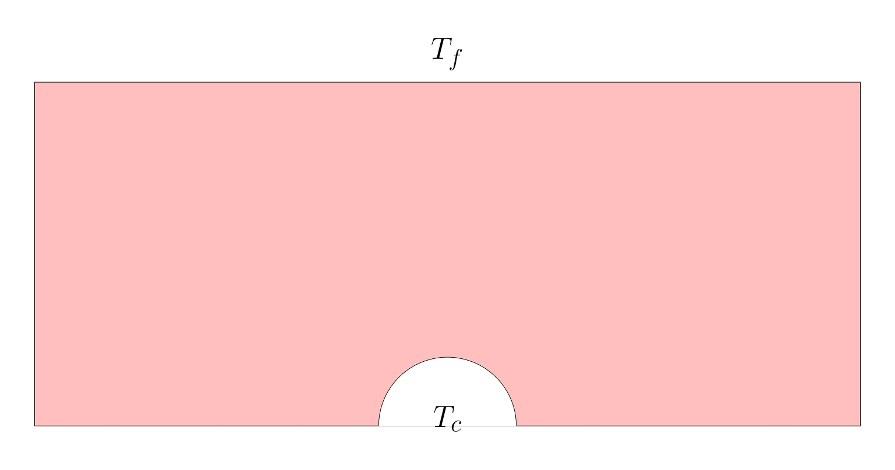

Stationary thermal problem#
Description of the problem#
This example aims in providing an example of a plate with a thermal source at its bottom center.

The objective is to find the resulting thermal field.
Implementation#
Geometry creation using GMSH#
Given the strong compatibility between GMSH and FEniCSx it is recommended to use GMSH. GMSH also has a python API. The mesh, refinement and marking operations can be proceeded in GMSH and imported in the FEniCSx environment.
Libraries#
Being a python API, the gmsh environment needs to be first loaded:
import gmsh
import numpy
import sys
Mesh initializing#
The model can be initialized:
gmsh.initialize()
gmsh.clear()
The dimension of the problem as well as the mesher options can be defined:
#----------------------------------------------------------------------
# Geometrical parameters
#----------------------------------------------------------------------
r_c = 0.02
l_d = 0.24
h_d = 0.1
gdim = 2
#
gmsh.model.add("2D_Stokes")
#Characteristic length
lc = l_d/60
gmsh.model.occ.synchronize()
gmsh.option.setNumber("General.Terminal",1)
gmsh.option.setNumber("Mesh.Optimize", True)
gmsh.option.setNumber("Mesh.OptimizeNetgen", True)
gmsh.option.setNumber("Mesh.MeshSizeMin", 0.1*lc)
gmsh.option.setNumber("Mesh.MeshSizeMax", lc)
gmsh.model.occ.synchronize()
# gmsh.option.setNumber("Mesh.MshFileVersion", 2.0)
# gmsh.option.setNumber("Mesh.MeshSizeExtendFromBoundary", 0.002)
# gmsh.option.setNumber("Mesh.MeshSizeFromPoints", 0)
# gmsh.option.setNumber("Mesh.MeshSizeFromCurvature", 5)
Geometry#
Using the OpenCascade kernel, reference geometries can directly be created and combined with boolean operations:
s1 = gmsh.model.occ.addRectangle(-0.5*l_d, 0, 0, l_d, h_d, tag=-1)
gmsh.model.occ.synchronize()
s2 = gmsh.model.occ.addDisk(0, 0, 0, r_c,r_c, tag=-1, zAxis=[], xAxis=[])
#
domain = gmsh.model.occ.cut([(gdim,s1)], [(gdim,s2)], tag=-1, removeObject=True, removeTool=True)
# Remove duplicate entities and synchronize
gmsh.model.occ.removeAllDuplicates()
gmsh.model.occ.synchronize()
It is recommended to export the geometry to visualize and validate:
gmsh.model.occ.synchronize()
gmsh.write('2D_thermique.geo_unrolled')
Marking#
GMSH creates the mesh for physical groups. Each of these groups are marked. All lines, surfaces and volumes of the model can be listed with:
lines, surfaces, volumes = [gmsh.model.getEntities(d) for d in [1, 2, 3]]
boundaries = gmsh.model.getBoundary(surfaces, oriented=False)
It is then required to create empty lists and tag values:
left, top, right, bottom, circle = [], [], [], [], []
tag_left, tag_top, tag_right, tag_bottom, tag_circle = 1, 2, 3, 4, 5
surf, tag_surf = [], 10
The lists can be automatically filled by identification of the faces and volumes based on their center of mass position:
for line in boundaries:
center_of_mass = gmsh.model.occ.getCenterOfMass(line[0], line[1])
if numpy.isclose(center_of_mass[0],-0.5*l_d):
left.append(line[1])
elif numpy.isclose(center_of_mass[1],h_d):
top.append(line[1])
elif numpy.isclose(center_of_mass[0],0.5*l_d):
right.append(line[1])
elif numpy.isclose(center_of_mass[1],0):
bottom.append(line[1])
else:
circle.append(line[1])
Alternatively they can be hand filled using the geo_unrolled filed and visualizing in the GMSH GUI.
To assign the surface tags, we run the following:
gmsh.model.addPhysicalGroup(gdim-1, left, tag_left)
gmsh.model.setPhysicalName(gdim-1, tag_left, 'Left')
#
gmsh.model.addPhysicalGroup(gdim-1, top, tag_top)
gmsh.model.setPhysicalName(gdim-1, tag_top, 'Top')
#
gmsh.model.addPhysicalGroup(gdim-1, circle, tag_circle)
gmsh.model.setPhysicalName(gdim-1, tag_circle, 'Circle')
#
gmsh.model.addPhysicalGroup(gdim-1, right, tag_right)
gmsh.model.setPhysicalName(gdim-1, tag_right, 'right')
#
gmsh.model.addPhysicalGroup(gdim-1, bottom, tag_bottom)
gmsh.model.setPhysicalName(gdim-1, tag_bottom, 'Bottom')
Similarly for the volumes:
for surface in surfaces:
center_of_mass = gmsh.model.occ.getCenterOfMass(surface[0], surface[1])
surf.append(surface[1])
#
gmsh.model.addPhysicalGroup(gdim, surf, tag_surf)
gmsh.model.setPhysicalName(gdim, tag_surf, 'surface')
Once again it is recommended to check the geometry identification:
gmsh.model.occ.synchronize()
gmsh.write('2D_thermique.geo_unrolled')
The mesh is generated and exported:
gmsh.model.mesh.generate(gdim)
gmsh.write("2D_thermique.msh")
Executing the following command at the end run the GMSH Gui for visualization before finalizing the model:
if 'close' not in sys.argv:
gmsh.fltk.run()
#
gmsh.finalize()
Finite Element Computation#
Libraries#
Computing the Finite element problem within FEniCSx in python requires to load the libraries:
import dolfinx
from dolfinx.fem.petsc import LinearProblem
import ufl
import basix
import petsc4py
import mpi4py
One can assess the version of FEniCSx with the following:
print("Dolfinx version is:",dolfinx.__version__)
Mesh Loading#
We load the mesh, facet and cell tags from the msh file created:
mesh, cell_tag, facet_tag = dolfinx.io.gmshio.read_from_msh('./2D_thermique.msh', mpi4py.MPI.COMM_WORLD, 0, gdim=2)
To verify if the domain is well tagged, an XDMF file can be created as follows:
with dolfinx.io.XDMFFile(mpi4py.MPI.COMM_WORLD, "verif.xdmf", "w") as xdmf:
xdmf.write_mesh(mesh)
xdmf.write_meshtags(facet_tag,mesh.geometry)
Material parameters#
The thermal properties are defined.
T_i = 100.0
T_e = 20.0
kc = 1.0
hc = 10.0
f = 0.
Function spaces, Functions and operators#
A Linear approximation is chosen for the thermal solution.
# Vector Element
# Finite Element
P1 = basix.ufl.element("P", mesh.topology.cell_name(), degree=1)
V = dolfinx.fem.functionspace(mesh, P1)
The mathematical spaces being defined, one can introduce the functions, expressions for interpolation, test functions and trial functions. It is recommended to place them all at a same position for debugging.
u = ufl.TrialFunction(V)
v = ufl.TestFunction(V)
The following operators are also defined:
q_deg = 4
dx = ufl.Measure('dx', metadata={"quadrature_degree":q_deg}, subdomain_data=cell_tag, domain=mesh)
ds = ufl.Measure("ds", domain=mesh, subdomain_data=facet_tag)
Dirichlet boundary conditions#
The boundary condition being fixed (no dynamically imposed displacement), the clamp is defined as follows:
bcs = []
fdim = mesh.topology.dim - 1
#
def add_dirichlet_BC(functionspace,dimension,facet,value):
dofs = dolfinx.fem.locate_dofs_topological(functionspace, dimension, facet)
bcs.append(dolfinx.fem.dirichletbc(value, dofs, functionspace))
#
add_dirichlet_BC(V,fdim,facet_tag.find(5), petsc4py.PETSc.ScalarType(T_i))
Variationnal form#
The objective is to find the temperature u, such that:
where a(u,v) is known as the bilinear form, L(v) as a linear form, and v is the test functions.
In our case, we have the variationnal form:
We can identify a and L such that:
This is traduced in FEniCSx with:
A = kc*ufl.dot(ufl.grad(u), ufl.grad(v))*dx + hc*u*v*ds(2)
L = f*v*dx + hc*T_e*v*ds(2)
Solving and post-processing#
To have the full computation log, the following is required. These information are crucial when debugging.
#----------------------------------------------------------------------
# Debug instance
log_solve=True
if log_solve:
from dolfinx import log
log.set_log_level(log.LogLevel.INFO)
#----------------------------------------------------------------------
Finally the problem is introduced as:
problem = LinearProblem(A, L, bcs=bcs, petsc_options={"ksp_type": "preonly", "pc_type": "lu"})
uh = problem.solve()
The solution can be saved in a xdmf file:
uh.name = "solution"
xdmf = dolfinx.io.XDMFFile(mesh.comm, "2D_thermique.xdmf", "w")
xdmf.write_mesh(mesh)
t=0
xdmf.write_function(uh,t)
xdmf.close()
# EoF